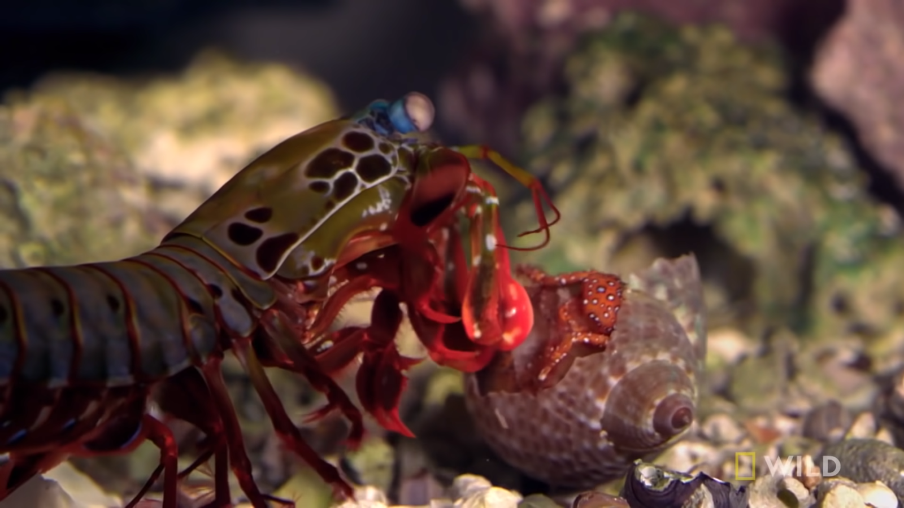
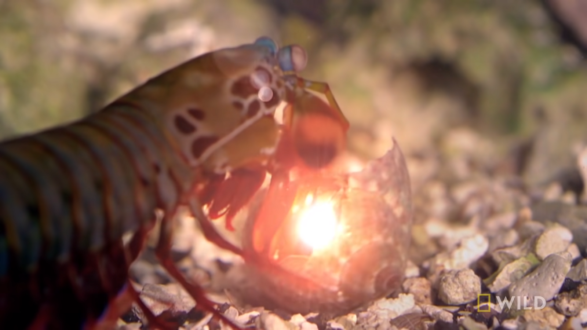

Fatos sobre o Stomatopoda
Informações Gerais
O Stomatopoda (ou estomatópode), também chamado de tamarutacas ou de lacraias-do-mar aqui no Brasil, pertence a ordem de crustáceos marinhos da subclasse Hoplocárida, que é a única representante ainda viva desta subclasse, mas não é um grupo tão pequeno, pois ele agrupa cerca de 400 espécies, que são caracterizadas principalmente pela morfologia da segunda pata torácica, que é modificada em um apêndice subquelado, lembrando uma pata de louva-a-deus.

|
|
| Nome Científico Odontodactylus scyllarus |
|
| Classificação científica | |
| Reino | Animalia |
| Filo | Arthropoda |
| Subfilo | Crustacea |
| Classe | Malacostraca |
| Subclasse | Hoplocarida |
| Ordem | Stomatopoda Latreille, 1817 |
Um Pesadelo do Fundo do Mar
O Stomatopoda é um dos animais mais violentos do mundo ele possui dois apêndices raptoriais na frente de seu corpo, que podem acelerar em menos de 3 milésimos de segundo, na mesma velocidade do tiro de um rifle de calibre vinte, isso é 50 vezes mais rápido que o tempo que levamos pra piscar, podendo atingir sua presa com 1.500 Newtons de força.
Só para dar uma ideia, se nós seres humanos pudéssemos acelerar nossos braços a um décimo dessa velocidade, seríamos capazes de lançar uma bola de beisebol em órbita.
Não é só um soco muuuuito forte
Seus membros se movem tão rapidamente que a água ao redor ferve em um processo conhecido como supercavitação. Quando essas bolhas de cavitação entram em colapso, produz uma onda de choque submarina que pode matar a presa mesmo se o camarão mantis errar o alvo.
A força dessas bolhas em colapso também produz temperaturas que podem se equiparar a temperatura da superfície do sol e emite minúsculas rajadas de luz. Este efeito é chamado de sonoluminescência.
Abatendo a Presa
Usando essas "varas assassinas", o desmembramento é principalmente a forma como o Stomatopoda mata sua presa. Ele quebra outros animais em pedaços, despedaçando caranguejos, moluscos, ostras e polvos até que a delícia comece a espirrar.
Seus hábitos de caça fazem com que ele não possam ser criados em aquários comuns, pois ele matariam tudo que encontrassem pela frente. Além de que poderiam facilmente quebrar o vidro do aquário.
Uma Visão Superior

Nossos olhos contêm milhões de células sensíveis à luz, chamadas bastonetes e cones.
Os bastonetes nos permitem ver a luz e o movimento.
Os cones permitem-nos ver as cores.
Temos três tipos de cones receptivos à cor. verde, azul e vermelho, e eles nos permitem ver todas as cores que são derivadas deles
Já o Stomatopoda tem nada mais nada menos do que dezesseis cones receptivos à cor, é mais de 5 vezes a quantidade de cones que temos.
O arco-íris que vemos origina-se da combinação de apenas três cores, você consegue imaginar um arco-íris criado a partir de todas as possíveis combinações das dezesseis cores que o Stomatopoda pode ver?
Onde vemos um arco-íris, ele provavelmente vê uma bomba termonuclear de luz e beleza.
Um Cara Durão

Seus membros são tão resistentes que os pesquisadores têm estudado sua estrutura celular para uso no desenvolvimento de armaduras corporais avançadas para tropas de combate.
Referências Bibliográficas
- O video ao lado aponta para este site: https://www.youtube.com/watch?v=E0Li1k5hGBE
- A página de Wikipédia sobre o Stomatopoda: https://pt.wikipedia.org/wiki/Stomatopoda
- Este site muito interessante: https://theoatmeal.com/comics/mantis_shrimp